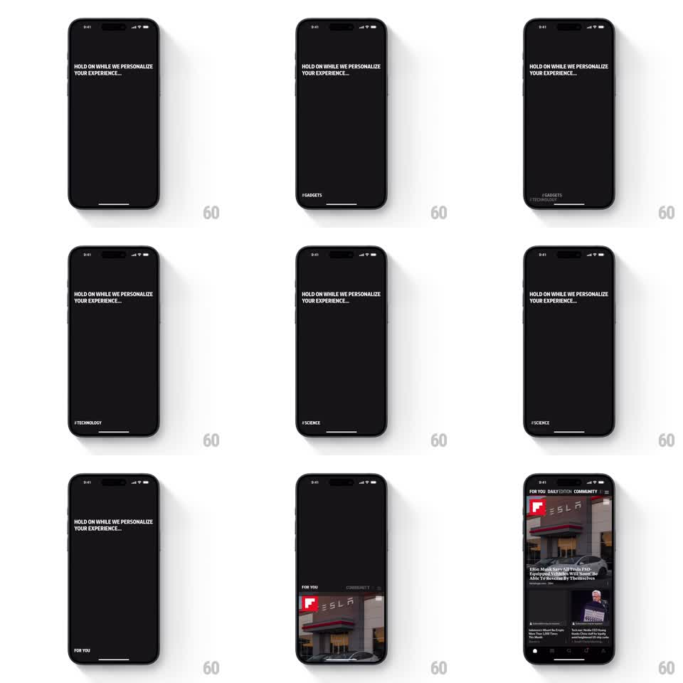

Media
Frame-by-frame

Rebuild this animation 1:1: Flipboard's personalization splash - topic hashtags cycle at the bottom of a black screen, then the last tag morphs into the feed's tab header as the content grid slides up.

Rebuild this animation 1:1: Flipboard's personalization splash - topic hashtags cycle at the bottom of a black screen, then the last tag morphs into the feed's tab header as the content grid slides up. ## Integration Integration: stack-agnostic spec - springs given as stiffness/damping, timed motions as duration + curve; map every value to your framework and animation library of choice. ## Scene Black loading screen: "HOLD ON WHILE WE PERSONALIZE YOUR EXPERIENCE..." top-left, and a hashtag at bottom-left that cycles. The end state is the feed: FOR YOU / DAILY EDITION / COMMUNITY tabs over a grid of story cards. ## Motion spec Pattern: hashtag cycler into header morph, ~4s total. - Hashtags (#GADGETS, #TECHNOLOGY, #SCIENCE, ...) swap at bottom-left every ~600ms: the old tag slides down and out, the new one slides in from above (250ms each, ease-in-out). - On the last tag, the swap targets the top of the screen: the tag travels up and docks into the tab bar position (400ms, ease-in-out), shrinking to header size as the tab labels materialize beside it. - Simultaneously the story grid slides up from the bottom (450ms, ease-out, 100ms behind the tag), filling the screen as the loading text fades. - The grid settles into a static feed; tabs are immediately tappable. ## Calibration - The tag's travel is one continuous motion from bottom-left to tab bar - no fade mid-path. - The grid follows the tag, never leads it; the header lands first. ## Reduced motion Loading screen crossfades to the assembled feed. ## Don't miss - The loading text and tag never animate together - the text is stone-still, the tag is the only motion until the handoff. - The final tag must be one of the cycled topics; the morph promises personalization and has to keep it.